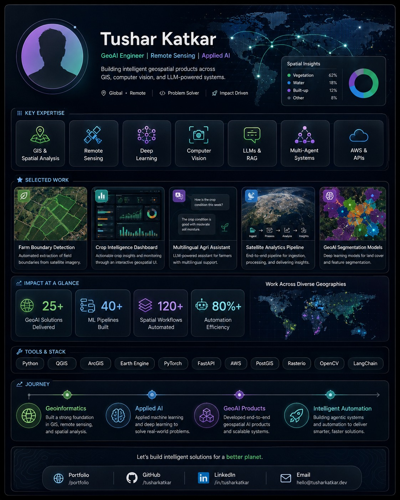

GEOAI · COMPUTER VISION
Farm Boundary Detection
Automated extraction and spatial refinement of agricultural field boundaries from imagery.
GEOAI ENGINEER · REMOTE SENSING · APPLIED AI
I work across GIS, earth observation, computer vision, deep learning, cloud APIs and LLM-powered systems to turn complex spatial data into usable intelligence.

SELECTED CAPABILITIES
Automated extraction and spatial refinement of agricultural field boundaries from imagery.

Interactive spatial monitoring patterns that combine imagery, indices and field-level insights.

Natural-language access to geospatial context, retrieval and intelligent workflows.

Reusable ingestion, preprocessing, inference and API-delivery architecture for geospatial data.

Semantic segmentation for converting imagery into structured land-cover and feature layers.
PUBLIC CODE
Linked directly to the public repositories on @tushar2159.
PyTorch · U-Net-style segmentation · config-driven training & evaluation
PyTorch · residual CNN · training, metrics, inference & CI
PyTorch · detector architecture · IoU/NMS · end-to-end pipeline
FastAPI · unified model router · validation · serving contracts
TECHNOLOGY STACK